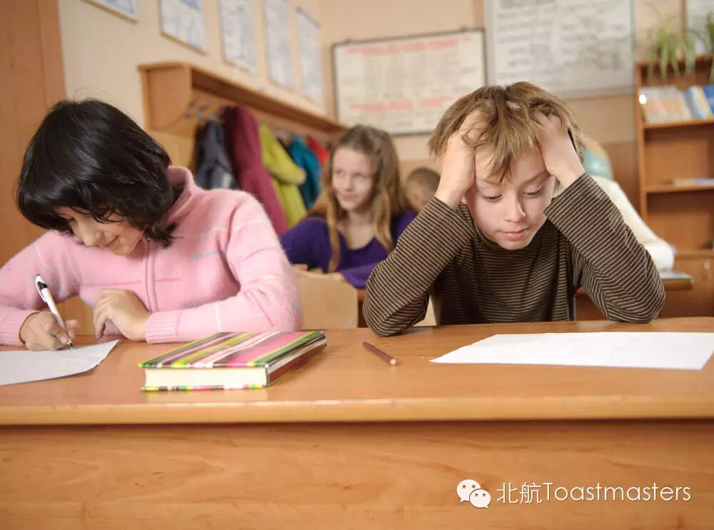
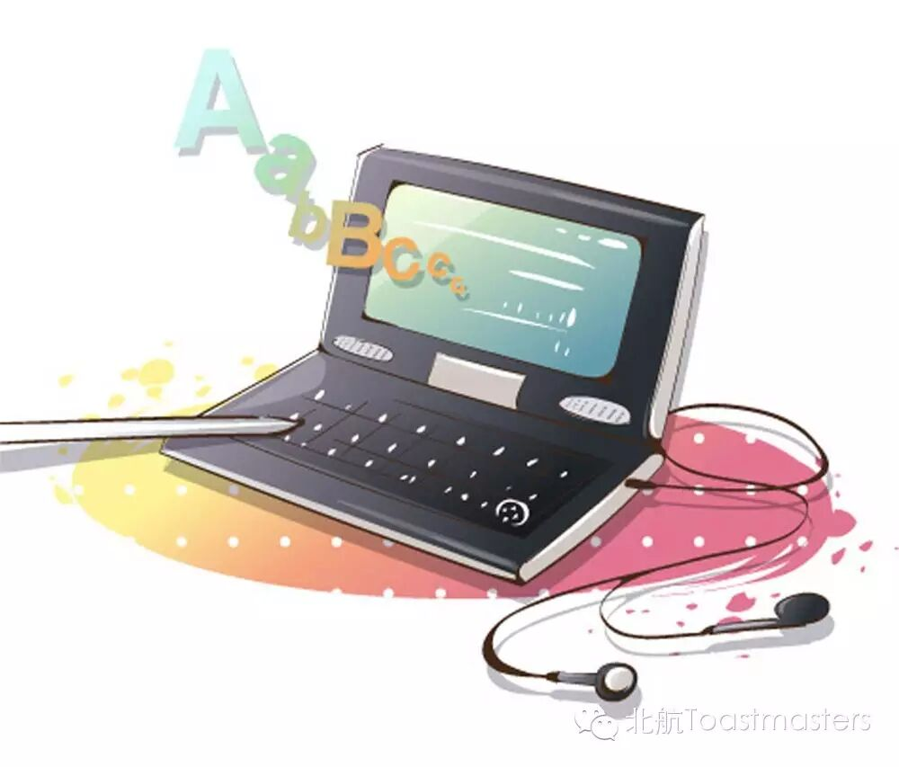
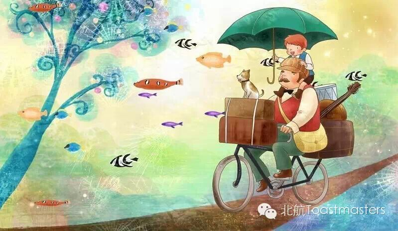
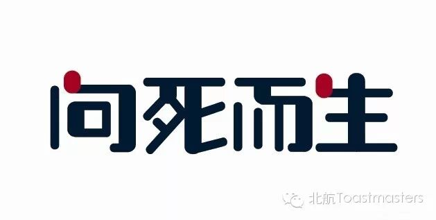
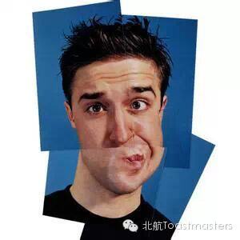
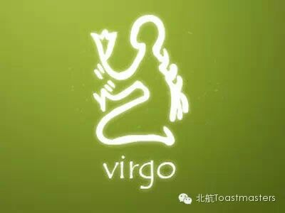

Time:19:30-21:30,Friday,May.15
Venue:Room B208,New Main Building,Beihang University
Toastmaster:Elena
So, here we are. The first speech marathon for Beihang Toastmasters ever!
Prepared speeches
1.The examination
AC1 Keven
Are you ever being a student? Areyou ever annoyed with examination? Do you know how many kinds of examinationsthere are in our life? What do you want to say to examination? What’s Keven’sopinion about examination? Let’s hope for Keven’s AC1 speech.

2.Dictionaries and collocations
CC7 Doris
Do you know how to use a dictionary to learn a word? Perhaps you will say “of course”! But is that true? Doris will tell you to focus on collocations and phrases, not just its meaning.

3.Grandpa Ye
CC3 Jane
“Grandpa, tell me about the good old days
Sometimes it feels like this world’s gone crazy
Grandpa, take me back to yesterday
When the line between right and wrong
……”
Grandpa told us so many things, Grandpa gave us so many memories, let’s enjoy the story of Grandpa Ye.

4.Being towards Death
CC2 MaunaLoa
Imagine you are born old and become younger and younger, like The Curious Case of Benjamin Button, what will be the difference of your life? As Heidegger’s dialectical analysis says, only when you understand the death, you understand the being.Let’s enjoy Mauna’s Being towards Death.

5.Emotional expression
CC2 Vicky
When a baby is hungry, it cries, while an adult will go and find some food; when a baby is sleepy, it cries, while an adult will have a rest. Emotional expression is so diverse, let’s look forward Vicky’s Emotional expression.

6.Virgo
CC1 Bowen
Virgos are completists, Virgos are skeptical, Virgos have cleanliness and obsession, Virgos are neurotic and emotional, Virgos have so many principles,Virgos are always clear-headed and cautious……Is that true? Let Bowen tell you!

7.Seeing is not always believing
CC1 Winston
People always say that seeing is believing, but have you ever seen a magic show? Do you know the debate of blue-black or white-gold? Have you ever been cheated by such a picture? Is seeing still believing? Let’s take a look at what will Winston say.
时间：每周五晚7：30-9：30
地点：北航新主楼B座208
联系人： Keven 15810539853
Map

Who are we?
According to Wikipedia, Toastmasters International (TI) is a nonprofit educational organization that operates clubs worldwide for the purpose of helping members improve theircommunication, public speaking, and leadership skills.
See you in the meeting!
Here is the two-dimension code of ourWeChat Subscription.
欢迎关注微信公众平台：北航Toastmasters

https://mp.weixin.qq.com/s/Sd8HbbUaNULRlT4LJwoQ_A
本页为抢救式本地归档，图文已永久保存。